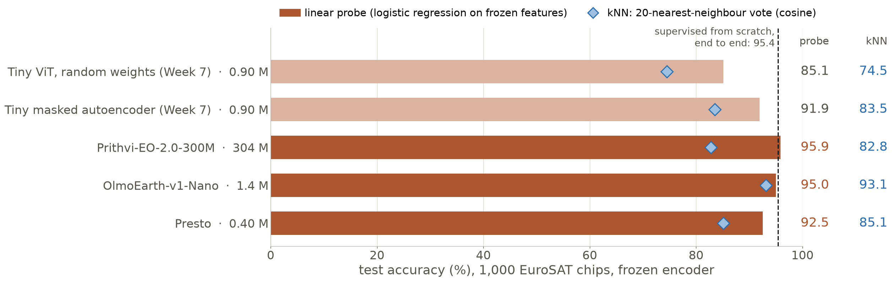
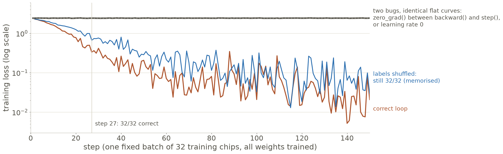

Left, 64 Sentinel-2 chips as a camera sees them; right, the same chips as a 1.4 M-weight Earth model sees them — water, fields and towns take different colours, and no EuroSAT label was used. Today: three generations of such models, how to load one and probe it on your own split, and how to compare them honestly.
Deep Learning Applications in Environmental Big Data · Prof. Hyunglok Kim · GISTImage: 64 EuroSAT-MS test chips in true colour; beside them OlmoEarth-v1-Nano’s 128 numbers per patch, squeezed to three (principal components) and shown as red, green and blue; computed for this lecture.
Week 10 · after the talks
Today: know your model’s generation, then load it, probe it, pilot it
1 · Generations
EO Earth observation, imaging the Earth from orbit · MAE masked autoencoder: hide most patches, rebuild them (Week 7) · ViT vision transformer, the encoder inside most of today’s models (Week 6) · sensor-agnostic one network that takes bands from any satellite · wavelength the colour of light a band records, in µm (micrometres) · embedding a vector of numbers that summarises an input · embedding field such a vector, precomputed for every 10 m pixel and year
2 · Code
GPU graphics processor, the chip that trains the network · checkpoint saved weights (plus optimizer state, to resume) · TerraTorch IBM’s toolkit for fine-tuning Earth models · HF Hub Hugging Face Hub, where public weights live · frozen probe a small classifier fitted on a fixed encoder’s embeddings · step time seconds per training step · peak memory the most GPU memory a step used
3 · Evaluation
benchmark fixed datasets and rules for comparing models · GEO-Bench-2, PANGAEA two 2025 benchmarks of Earth models (Week 9) · U-Net Week 4’s convolutional encoder–decoder, PANGAEA’s supervised baseline
Talk 3 · Mon 23 Nov — pilot evidence and compute decision · slides by Sun 22 Nov 23:59 (slide 16)
Studio straight after the lecture (slide 17) · reading: Szwarcman et al. 2024, Prithvi-EO-2.0 · model cards and full code in the Appendix
Part 1 · this week’s paper
Three Generations of Earth Foundation Models
What you will see One slide per generation: what the model learns from, what you download, what using it costs you. Then a table that places each class project. By the end: name your base model’s generation and the alternative you would test it against.
Why it matters here The generation fixes your input contract and your compute: a pixel model needs your bands in its order and a GPU; an embedding field needs neither, but you cannot change what it computed.
Where it is used NASA–IBM’s Prithvi for floods, burn scars and crops; IBM–ESA’s TerraMind; Google DeepMind’s AlphaEarth embeddings in Earth Engine; Ai2’s OlmoEarth. All four have public weights or data.
Generation 1: hide three quarters of the patches, rebuild the pixels
Your Week 7 mini-MAE, about 340 times larger and fed four dates; you download an encoder tied to one sensor.
SatMAE · Stanford, 2022
Sentinel-2, 10 of its 13 bands (the 60 m ones dropped) in 3 groups, each with its own patch embedding; the date encoded like a position; groups and dates masked independently
Prithvi-EO-2.0 · NASA–IBM, 2024
HLS, 6 bands, 4 dates; 3-D patches; date and lat/lon added like positions in the -TL (temporal-location) checkpoints; 4.2 M global samples; 300 M and 600 M (5 M and 100 M since 2025)
3-D patch — a patch with a time axis; Prithvi-EO-2.0 sets its depth to 1 date (× 16 × 16 pixels) · HLS — Harmonized Landsat Sentinel-2, NASA’s 30 m surface-reflectance product
Cong et al. 2022, SatMAE §4, §5.4 · Szwarcman et al. 2024, Prithvi-EO-2.0, arXiv 2412.02732 §III-A–B · HF config ibm-nasa-geospatial/Prithvi-EO-2.0-300M
Generation 2: one network for many sensors, keyed by wavelength or by modality
Radar, optical or hyperspectral, three bands or two hundred: in DOFA, the band’s wavelength tells the network what it sees.
Trained on: DOFA, five sensors from radar to 202-band hyperspectral (≈ 11.5 M images); TerraMind, ≈ 9 M radar–optical samples plus five other modalities.
Sentinel-1 is a native input here — but radar alone is weaker: on Sen1Floods11 TerraMind scores 80.4 mIoU from radar, 89.6 from optical.
hypernetwork — a small network whose output is the weights of another layer (here, the weight generator) · mIoU — mean intersection over union, the overlap score of a predicted and a true map
Xiong et al. 2024, DOFA, arXiv 2403.15356 §3.2–3.3, §4.5 · Jakubik et al. 2025, TerraMind, arXiv 2504.11171 §3–4, Table 7 · loaders and sizes: Appendix A1
Generation 3: download the embeddings, not the model
The provider ran the encoder on every 10 m pixel, year by year; you fetch the vectors and fit a small model.
AlphaEarth: 64 numbers, 2017–2024 in Earth Engine · TESSERA: 128 numbers, Sentinel-1 + Sentinel-2, 2017–2025, open weights.
For a 9 km soil-moisture cell, average the 10 m vectors inside it: a static descriptor, not the daily dynamics.
Earth Engine — Google’s cloud catalogue and compute for geodata; AlphaEarth’s field is published there · k-NN — label a pixel by its nearest labelled neighbours in embedding space (Week 7)
Brown et al. 2025, AlphaEarth Foundations, arXiv 2507.22291 §3, Table S1 · Earth Engine catalog GOOGLE/SATELLITE_EMBEDDING/V1/ANNUAL · Feng et al. 2025, TESSERA, arXiv 2506.20380 · code: A5
Part 1 · Your project
Which generation does your project touch — and what is the gap?
Earth models see 10–30 m; most of our projects live at 9–36 km and daily to monthly steps. Name the gap you cross.
project (from Talk 1)
its input and scale
nearest generation
a first honest probe
River stage from Sentinel-1 + SWOT
radar, 10 m; SWOT every 21 days
2 · any sensor (radar is native)
frozen radar encoder vs your SWOT-pretrained model, same head
Soil moisture: gap-filled SMAP (NASA’s soil-moisture satellite) and its errors
9–36 km grids, daily
3 · embedding field as a static covariate; weather models in Week 11
with vs without cell-averaged embeddings (AlphaEarth’s are made to be averaged)
Soil-moisture forecast: which inputs matter
9–36 km, daily drivers (rain, radiation)
pixel time series, Presto’s design (the only one with weather inputs); weather models in Week 11
remove one input group, retrain, compare
GRACE storage → river flow
monthly, basin to 300 km
none fits directly — say so
embeddings only as basin descriptors (AlphaEarth used GRACE as a target, not an input)
“No Earth model fits my scale” is a finding, not a failure — put it in Talk 3 with the alternative you will test instead.
SWOT — Surface Water and Ocean Topography, a NASA–CNES radar-altimetry satellite (2022) · GRACE — Gravity Recovery and Climate Experiment: monthly changes in water storage from gravity
Rows from the 9 Nov Talk 1 slides · Presto: Tseng et al. 2023 (pixel time series with weather inputs) · Week 11: Pangu, GraphCast, Aurora and other weather models
Part 2 · Code for the studio
Load a Checkpoint, Probe It, Pilot It
What you will see Three public models loaded in a few lines each; a frozen probe with its setting chosen on validation; three pilot checks — overfit 32 samples, time one step, kill and resume. All run on our EuroSAT chips this weekend. By the end: run each on your own validation split.
Why it matters here Talk 3 asks for a probe number, a step time, a peak memory and a resume that works — before the big runs. A bug found on 32 samples costs a minute; found after ten GPU-hours, it costs a week.
Where it is used Large Earth models report these steps: OlmoEarth’s short pilot runs, Prithvi-WxC’s measured memory and throughput, Aurora’s checkpointing — steps 4–7 of the pipeline your talks follow.
Part 2 · Load · run on this Mac, 15 Nov
Three checkpoints, three loaders — the real work is the input contract
Loading takes two lines; feeding each model the bands, scaling and size it was trained on is the job.
Prithvi-EO-2.0-300M · TerraTorch · 304 M weights
enc = BACKBONE_REGISTRY.build("prithvi_eo_v2_300", pretrained=True).eval() # from terratorch.registry
out = enc(x) # x (B, 6, 224, 224) → 24 blocks, each (B, 197, 1024)
emb = out[-1][:, 1:].mean(1) # drop [CLS], the extra class token; average 196 patches → (B, 1024)
HLS B02–B07 = Sentinel-2 B02 B03 B04 B8A B11 B12 · (reflectance × 10⁴ − mean) / std from its config · 224 × 224 · up to 4 dates
OlmoEarth-v1-Nano · olmoearth-pretrain · 1.4 M weights
12 Sentinel-2 L2A (surface-reflectance) bands in its order, its own normaliser · a date per time step · patch 1–8 (smaller is finer and slower)
Presto · one file from GitHub · 0.4 M weights
p = Presto.construct(); p.load_state_dict(torch.load("default_model.pt", weights_only=True))
e = p.encoder(x, dynamic_world=dw, latlons=ll, mask=m, month=1, eval_task=True) # x (4096 pixels, T, 17)
emb = torch.cat([e.mean(0), e.std(0)]) # one chip = mean and std over its pixels → (256,)
one pixel at a time · 17 channels: Sentinel-2 as reflectance, NDVI (a vegetation index); radar, weather and elevation masked when missing · 1–24 months
Full, runnable versions and installs: Appendix A2–A3 · terratorch 1.2.14 · olmoearth-pretrain 0.1.2 · Presto repo 11e207a · all three loaded with weights_only=True
Part 2 · Probe · run on this Mac, 15 Nov
A frozen probe: embed once, choose C on validation, open the test once
The cheapest honest number about a checkpoint — and card 1 of next Monday’s talk.
# Ftr, Fte: frozen embeddings of every chip, computed once (no_grad) and saved to disk
a, v = train_test_split(np.arange(len(ytr)), test_size=0.2, stratify=ytr, random_state=0)
sc = StandardScaler().fit(Ftr[a]) # statistics from the training part only
fit = lambda C: LogisticRegression(C=C, max_iter=5000).fit(sc.transform(Ftr[a]), ytr[a])
val = {C: fit(C).score(sc.transform(Ftr[v]), ytr[v]) for C in np.logspace(-3, 2, 6)}
C = max(val, key=val.get) # chosen on validation only
# in your project the next line stays commented out until Fri 4 Dec
print("test accuracy, looked at once:", fit(C).score(sc.transform(Fte), yte))
What it printed · OlmoEarth-Nano features validation accuracy for C = 0.001 … 100: 0.909 · 0.948 · 0.959 · 0.961 · 0.945 · 0.938 → C = 1 test, looked at once: 94.3%
What embedding cost · 5,000 chips OlmoEarth-Nano 8 s · Prithvi-300M 43 s · Presto 48 s on the M2 Ultra GPU — then every probe refit takes seconds.
C — the inverse strength of the regulariser in logistic regression: small C, simpler boundary · frozen — the encoder’s weights stay fixed; only the small head is fitted
scikit-learn 1.9.1 · 4,000 training chips → 3,200 fit + 800 validation, stratified, seed 0; 1,000 test chips · tools/week10_figs/snippets/s7_valsplit.py
Part 2 · Our numbers · measured 15 Nov
Two public encoders tie the supervised network on our chips — and the readouts disagree
Week 7’s 4,000 training and 1,000 test chips, every encoder frozen; ±0.7 points is test-sampling noise alone.

Prithvi 95.9 and OlmoEarth-Nano 95.0 are each within one standard error of supervised 95.4 — and Nano has about 1/220 of Prithvi’s weights.
By kNN Prithvi falls to fourth; fed our 64 × 64 chips at their own size instead of its 224, it drops to 93.7.
standard error — the spread from test-set sampling alone: √(0.95 × 0.05 / 1000) ≈ 0.7 points here
Not corrected: EuroSAT is top-of-atmosphere; Prithvi and OlmoEarth were trained on surface reflectance · tools/week10_figs/out/summary.md
Part 2 · Pilot check 1 · run on this Mac
Before any long run, overfit 32 samples
If a network cannot memorise one small batch, a long run will not fix it: the bug is in the loop.

for step in range(150): # ONE fixed batch of 32 training chips, all weights trained
loss = F.cross_entropy(head(pool(enc(batch))), y32)
opt.zero_grad(); loss.backward(); opt.step() # zero_grad between backward and step = the flat line
Shuffled labels also reach 32 of 32: the check finds bugs in the loop, not wrong labels.
OlmoEarth-v1-Nano + linear head, AdamW, learning rate 10⁻³, 32 EuroSAT chips; 150 steps in 18 s on the M2 Ultra · full code: tools/week10_figs/snippets/s4_overfit.py
Part 2 · Pilot check 2 · step time and memory
Time one step and read the peak memory — at your batch size, on your GPU
These two numbers turn your planned runs into GPU-hours: the go-or-shrink decision of Talk 3.
def measure(step, n=25, warm=5): # step() = forward + loss
torch.cuda.reset_peak_memory_stats() # + backward + opt.step()
ts = []
for i in range(warm + n):
torch.cuda.synchronize(); t = time.perf_counter()
step()
torch.cuda.synchronize(); ts.append(time.perf_counter() - t)
ms = 1000 * sorted(ts[warm:])[n // 2] # the median
gib = torch.cuda.max_memory_allocated() / 2**30
print(f"median {ms:.0f} ms/step, peak {gib:.2f} GiB")
batch 16, Apple M2 Ultra
ms / step
memory, GiB
Prithvi-300M, frozen + head
150
1.6–2.0
Prithvi-300M, all weights
531
10.5–11.1
OlmoEarth-Nano, frozen + head
24
0.1–1.7
OlmoEarth-Nano, all weights
64
1.6–3.2
Check one batch against the CPU: here a 64-chip batch at 3,072 tokens per chip came back wrong for 7 chips — and raised no error.
synchronize — wait for the GPU to finish; without it you time the queueing, not the work · memory — GiB = 2³⁰ bytes; low: sampled during the step, high: what Apple’s GPU driver held
CUDA code: written for your T4, not run here; the same function with torch.mps.synchronize() ran on the M2 Ultra (fp32, median of 25 steps after 5 warm-up) · tools/week10_figs/out/summary.md
Part 2 · Pilot check 3 · kill it on purpose
A resumed run must retrace the uninterrupted one — bit for bit
Colab and Kaggle end sessions without asking; a complete checkpoint turns that into a pause.
state = dict(step=step, model=model.state_dict(), opt=opt.state_dict(), sched=sched.state_dict(),
rng=dict(py=random.getstate(), torch=torch.get_rng_state(), np=..., cuda=...),
data=dict(gen=gen.get_state(), perm=perm, pos=pos)) # the sampler: order and position
torch.save(state, path + ".tmp"); os.replace(path + ".tmp", path) # atomic: a kill mid-save is harmless
Forget the optimizer and Adam restarts from zero: a spike. Forget the random state and every later batch differs.
RNG — random-number generator; its state fixes dropout, random crops and the shuffle order
Week 7 tiny MAE, 600 steps at batch 256; a real kill (SIGKILL) at step 350, resumed from the step-300 checkpoint · full save and load: Appendix A4
Part 3 · Honest evaluation
No model dominates, so the table decides — four rules for yours
You met both benchmarks in Week 9. Today they become the rules for the table you show on 30 Nov.
1 · Same head, same budget Prithvi-EO-2.0 gave every model ten tuning trials on validation, then ten seeds; PANGAEA froze every encoder under one decoder.
2 · A U-Net row, tuned to win With all labels, PANGAEA’s U-Net beats every foundation model on 5 of 11 datasets — and on Sen1Floods11 at every label fraction.
3 · Say frozen or fine-tuned In GEO-Bench-2, freezing the encoder changed the order of “over 20% of model pairs”: a ranking holds only for its protocol.
4 · Several tasks, with intervals Five different models rank first on at least one of GEO-Bench-2’s nine capabilities. You report block-bootstrap intervals (Week 11).
Today’s paper, averaged by us: on GEO-Bench the 300 M Prithvi-EO-2.0 sits below two 25 M ResNet-50s; only the 600 M beats every other model.
label fraction — the share of training labels used: 10%, 50% or 100% · block bootstrap — resample whole blocks of space or time, recompute the score, read an interval from the spread
23 Nov, Talk 3: pilot evidence and the compute decision
Ten minutes + three of questions · slides (PDF) in the Talk 3 slot by Sun 22 Nov 23:59 · the test split stays sealed.
1 · Checkpoint diagnostic Frozen probe of the public model on your validation split, and one failure example — before any real fine-tuning.
2 · Toy scaling evidence Two mini-MAE sizes at the same time budget → the one you chose → a ten-minute continuation with an interruption and resume → its probe. Tokens seen, quality, memory, throughput.
3 · Adaptation pilot The 32-sample overfit, a short learning curve, what you train (head, LoRA rank, or all weights) → your optimiser, learning rate and epochs.
4 · Engineering numbers Data-loading and step time, precision, peak memory, and a checkpoint resume that retraces the curve.
5 · Four rows ready? Status and tuning budget for each row; random-init uses the same architecture and recipe; the supervised competitor is tuned to win.
6 · Go or shrink Projected GPU-hours: tuning, ≥ 3 seeds per row, one ablation with two settings, evaluation, a restart reserve. Commit the run matrix.
LoRA — low-rank adaptation: train two thin matrices beside each frozen weight instead of the weight itself · run matrix — the table of every run you will launch: row, seed, setting, budget
Repo by Sunday: eval/ · pilot logs · resume evidence · run matrix · dated amendments · then 30 Nov controlled runs (validation) · 7 Dec held-out results · 14 Dec final
Project studio · after the lecture
Studio: two pilots, one interruption, two probes — measured, not guessed
1 · Two mini-MAE pilots on the Week 7 corpus, two sizes, the same time budget each.
2 · Choose one by its validation probe; continue it ten minutes — kill it once and resume from the checkpoint.
3 · Frozen probe of your public base model on your own validation split: embed once, cache, fit.
4 · Adaptation pilot: overfit 32 samples; step time and peak memory at your batch size.
Check before you leave
One row per run in eval/pilots.csv: size · minutes · tokens seen · validation probe · step time · peak memory · resumed at step.
The resumed curve sits on the uninterrupted one — plot both.
tokens seen — patches processed by the encoder in training: steps × batch × visible tokens per sample; the fair x-axis for comparing two sizes
Note 10 (pilot table, probe results, memory/throughput/resume evidence, run matrix), video summary 10 and Talk 3 slides — Sun 22 Nov 23:59 · optional: a dense Sen1Floods11 probe, or AlphaEarth / TESSERA embeddings (A5)
Appendix
Reference cards
A1 eight Earth models in one table: inputs, sizes, data, licence, how to get them · A2–A3 the three loaders in full, and the installs
A4 checkpoint-and-resume template · A5 embedding fields: AlphaEarth from Earth Engine, TESSERA from Python · A6–A7 reading and videos
The studio starts after slide 17.
Appendix A1 · Model cards
A1 · Eight Earth models in one table
model · gen.
input
size
pretraining data
licence · how to get it
SatMAE · 1 Stanford 2022
Sentinel-2, 10 of 13 bands in 3 groups; or RGB time series
ViT-L, 306 M
fMoW-Sentinel, 713 k images
CC BY-NC 4.0 · GitHub sustainlab-group/SatMAE
Prithvi-EO-2.0 · 1 NASA–IBM 2024
HLS, 6 bands × 4 dates, 30 m
5 M · 100 M · 300 M · 600 M
4.2 M global samples, 2014–2023
Apache-2.0 · TerraTorch prithvi_eo_v2_300
DOFA · 2 TU Munich 2024
any bands, each with its wavelength; one date
ViT-B, ViT-L
≈ 11.5 M images from 5 sensors (S1, S2, Gaofen, NAIP, EnMAP)
weights CC BY 4.0 · TorchGeo dofa_base_patch16_224
TerraMind · 2 IBM–ESA 2025
S2 L1C/L2A, S1 GRD/RTC, elevation, RGB; one date
tiny → large; base 86 M, large 300 M
TerraMesh, ≈ 9 M samples, 9 modalities
Apache-2.0 · TerraTorch terramind_v1_base
OlmoEarth · 2 Ai2 2025
S2 L2A, S1, Landsat; up to 12 months; 10 m
Nano 1.4 M · Tiny 6.2 M · Base 89 M · Large 308 M
285,288 one-year samples, 2016–2024
OlmoEarth Artifact License (no military, surveillance or extractive use) · olmoearth-pretrain
Presto · pixel series NASA Harvest 2023
one pixel: S1, S2, ERA5 rain and temperature, vegetation index, land cover, elevation, location; 1–24 months
0.4 M
21.5 M pixel samples, 2020–2021
MIT · GitHub nasaharvest/presto
AlphaEarth · 3 DeepMind 2025
you get 64 numbers per 10 m pixel per year (from S2, Landsat 8/9, S1)
≈ 480 M, weights not public
3 B observations at 5.1 M sites
embeddings CC BY 4.0 · Earth Engine, 2017–2024
TESSERA · 3 Cambridge 2025
you get 128 numbers per 10 m pixel per year (from S1 + S2)
encoder 45.7 M
≈ 800 M pixel series, 2017–2024
embeddings and weights CC0 · pip install geotessera
Appendix A3 · Run on this Mac, 15 Nov · installs for Colab
A3 · Presto in full, and the three installs
# wget -q https://raw.githubusercontent.com/nasaharvest/presto/main/single_file_presto.py
# wget -q https://github.com/nasaharvest/presto/raw/main/data/default_model.pt
import torch
from single_file_presto import Presto
dev = 'cuda' if torch.cuda.is_available() else 'mps' if torch.backends.mps.is_available() else 'cpu'
presto = Presto.construct()
presto.load_state_dict(torch.load('default_model.pt', map_location='cpu', weights_only=True))
enc = presto.encoder.to(dev).eval()
n = 64 * 64 # every pixel of one chip is a 1-step time series
x = torch.rand(n, 1, 17, device=dev) * 0.3 # 17 channels: S2 = DN/1e4 at 2..11, NDVI at 16
mask = torch.ones_like(x); mask[..., 2:12] = 0; mask[..., 16] = 0 # hide S1, ERA5, SRTM
dw = torch.full((n, 1), 9, device=dev) # 9 = no Dynamic World label
ll = torch.tensor([[48.1, 11.6]], device=dev).expand(n, 2) # lat, lon
with torch.no_grad():
e = enc(x, dynamic_world=dw, latlons=ll, mask=mask, month=1, eval_task=True) # (4096, 128)
print(tuple(e.shape), tuple(torch.cat([e.mean(0), e.std(0)]).shape)) # (4096, 128) (256,)
pip install terratorch # 1.2.14 here
pip install --no-deps olmoearth-pretrain==0.1.2 # --no-deps keeps your torch
pip install "universal-pathlib>=0.2.5" # needed by olmoearth-pretrain
Without --no-deps, olmoearth-pretrain pins torch below 2.10 and replaces the one Colab gave you.
Presto repo @ 11e207a; default_model.pt (3.3 MB) is the same file as Hugging Face nasaharvest/presto · installs tested on this Mac, not yet on Colab · tools/week10_figs/snippets/s3
Appendix A4 · Template · round-trip tested
A4 · Save and load everything a resume needs
import os, random, numpy as np, torch
def save(path, step, model, opt, sched, gen, perm, pos):
npst = np.random.get_state()
state = dict(step=step, model=model.state_dict(), opt=opt.state_dict(), sched=sched.state_dict(),
rng=dict(py=random.getstate(), torch=torch.get_rng_state(),
np=(npst[0], torch.from_numpy(npst[1].astype(np.int64)), *npst[2:]),
cuda=torch.cuda.get_rng_state_all() if torch.cuda.is_available() else []),
data=dict(gen=gen.get_state(), perm=perm, pos=pos)) # sampler: order + position
torch.save(state, path + '.tmp'); os.replace(path + '.tmp', path) # atomic: a kill mid-save is harmless
def load(path, model, opt, sched, gen):
c = torch.load(path, map_location='cpu', weights_only=True)
model.load_state_dict(c['model']); opt.load_state_dict(c['opt']); sched.load_state_dict(c['sched'])
random.setstate(c['rng']['py']); torch.set_rng_state(c['rng']['torch']); gen.set_state(c['data']['gen'])
r = c['rng']['np']; np.random.set_state((r[0], r[1].numpy().astype(np.uint32), *r[2:]))
if c['rng']['cuda']: torch.cuda.set_rng_state_all(c['rng']['cuda'])
return c['step'], c['data']['perm'], c['data']['pos']
Draw batches from your own permutation perm with a torch.Generatorgen, so the data order can be saved too.
Round trip on a small model: 40 steps straight vs 20 + save + rebuild + load + 20, max |Δloss| = 0 · the CUDA RNG lines were not exercised here · tools/week10_figs/snippets/s6
Appendix A5 · Optional extension · TESSERA run here, Earth Engine not
A5 · Embedding fields over a Korean area: AlphaEarth (Earth Engine) or TESSERA
import ee # AlphaEarth, from Earth Engine
ee.Authenticate(); ee.Initialize(project="my-ee-project") # free for research and education
aoi = ee.Geometry.Rectangle([126.6, 35.0, 127.1, 35.4]) # lon/lat box around Gwangju
emb = (ee.ImageCollection("GOOGLE/SATELLITE_EMBEDDING/V1/ANNUAL")
.filterDate("2024-01-01", "2025-01-01").filterBounds(aoi)
.mosaic()) # 64 bands A00 … A63, 10 m, unit length
pts = ee.FeatureCollection("projects/my-ee-project/assets/labels") # your points, property 'label'
table = emb.sampleRegions(collection=pts, properties=["label"], scale=10)
clf = ee.Classifier.smileRandomForest(100).train(table, "label", emb.bandNames())
pred = emb.classify(clf).clip(aoi) # a map from a few hundred points
cells = emb.reduceRegions(collection=my_9km_cells, reducer=ee.Reducer.mean(), scale=100)
from geotessera import GeoTesseraZarr # TESSERA: pip install geotessera
X = GeoTesseraZarr().sample_points([(126.84, 35.23)], year=2024) # (N, 128); two points took 58 s at GIST
An extra column for your table: same labels, same split, a random forest on the embeddings — no GPU, and a strong baseline to beat.
Earth Engine catalog GOOGLE/SATELLITE_EMBEDDING/V1/ANNUAL (2017–2024; CC BY 4.0; “produced by Google and Google DeepMind”) · geotessera 0.11.0 (2017–2025, CC0), run 15 Nov · Earth Engine needs your own project
Appendix A6 · Read and watch
A6 · The reading, the week’s video, three short ones
Read: Szwarcman et al. 2024, Prithvi-EO-2.0 (arXiv 2412.02732) · optional: Cong et al. 2022, SatMAE · Herzog et al. 2025, OlmoEarth (arXiv 2511.13655)
All embed (checked 15 Nov 2026) · the week’s video is 34 min — watch at home; video summary 10 due Sun 22 Nov 23:59 · longer talks from the authors: A7
Appendix A7 · From the authors
A7 · Four longer talks, one per model you met today
All embed (checked 15 Nov 2026) · the benchmarks from their authors: GEO-Bench-2, ServiceNow (18 min, youtu.be/75xclLXkFzI) · PANGAEA, GEO AI4EO webinar (54 min, youtu.be/w-M76Lq7sYg)
![Training loss of the Week 7 tiny masked autoencoder over 600 steps. The uninterrupted run and a run killed at step 350 and resumed from the step-300 checkpoint lie exactly on top of each other. A run resumed without the optimizer state spikes from about 0.32 to 0.44 right after step 300. A run resumed without the random-number and data-order state wanders around the original. Largest loss difference from the uninterrupted run over steps 301 to 600: resumed 0, bit-identical; without optimizer state 0.120; without random and data-order state 0.058.](img/fig-w10-resume.png)